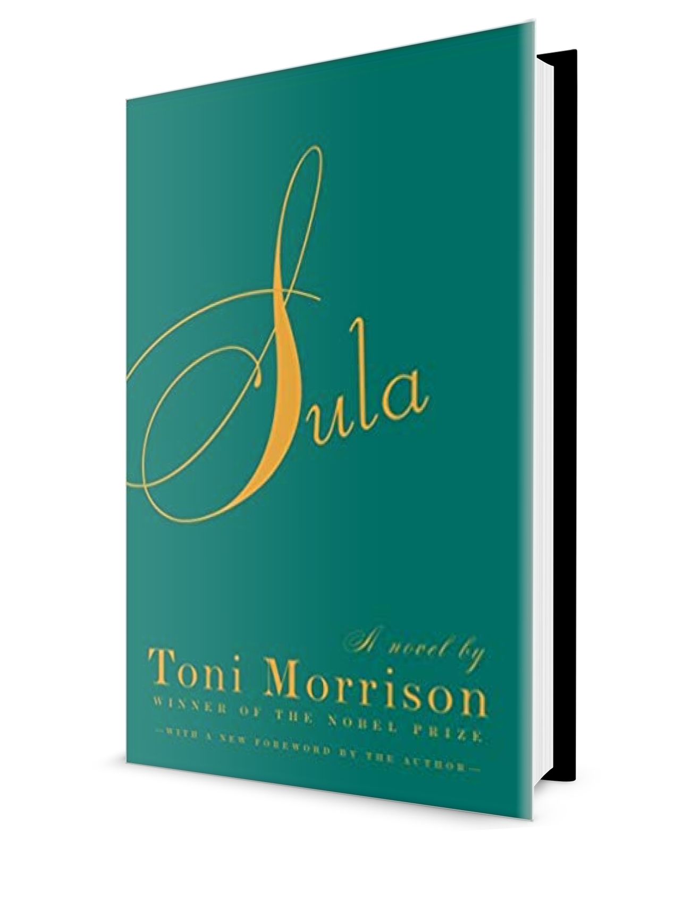

eva in sula
Eva’s strength is a huge piece of Morrison’s Sula. Morrison utilizes Eva’s character to reflect the sides of being a Black mother under racism and oppression. When Hannah asks Eva is she loves her children because she never plays with them, Eva replies that she has not had time to play because she has worked so hard to keep her children alive, reflecting the idea that Black women cannot be the same type of mother White women get to be because they have to focus on simply getting to tomorrow.
strength
the capacity of an object or substance to withstand great force or pressure.
My mother is the strongest person I know. My mother buried the father of her kids and took on life as a single mother like it was easy. There was no time to grieve, no time to sit in bed, no one outside the family to talk to, she had to just keep going. And she made it look easy. Even when the load gets heavy and it’s wearing her back in, she still makes it look easy. Taking care of three kids, going to night classes, cooking, cleaning and keeping the lights on was a lot. But she made it look easy. I’ve never heard my mother cry or complain about her responsibilities, even when she was tired and had every right to. She was my tutor and teacher, my chef, my shoe tier and more. Not just for me though, but for my two sisters too.
I remember listening to the walls hearing my mother argue with her boyfriend (who I HATED) at 1AM and she would still be up and ready to fix my hair and take me to school by 6AM. My mother has kept her composure in situations where I would have lost it all and shown my ass. From being let go from her job, lied to by men, and simply having to always put herself last. She continues to get up on days where her spirit is broken, when she really isn’t feeling it, when she just wants to walk away from the world, she still remains.